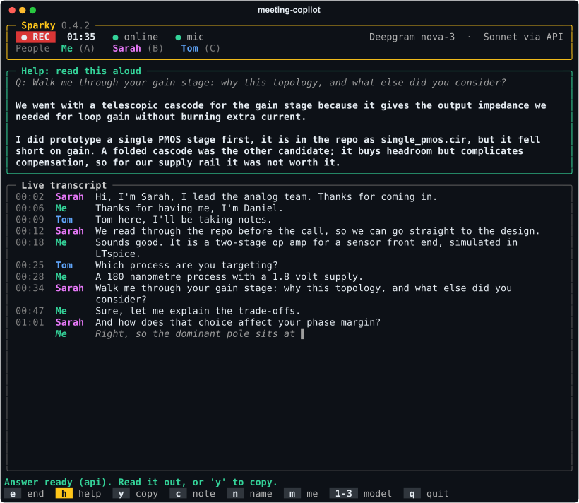
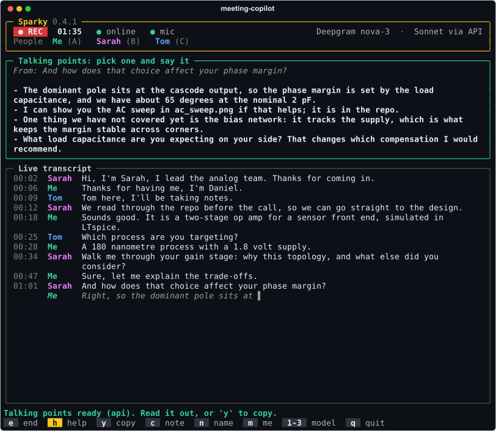
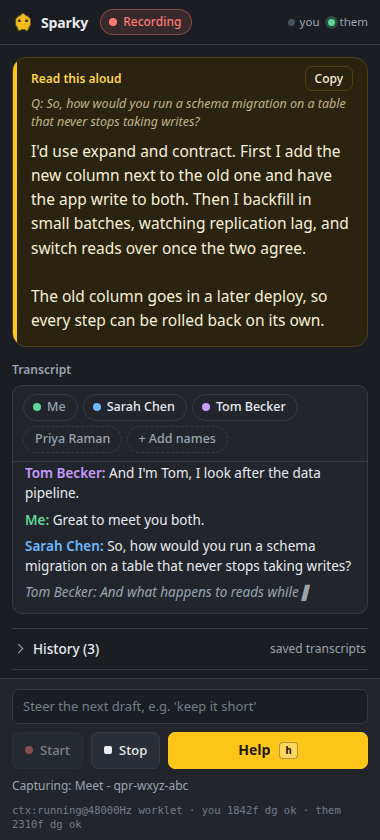

Sparky listens to the conversation you are in and, on one keypress, drafts what
you would say next in your own words. An answer if you were just asked something.
Talking points to keep things moving otherwise. Grounded in your repo, or in
whatever you pasted, and read aloud by you.
A terminal app for Linux, macOS and Windows, for the room you are in, or a side panel beside your Google Meet
or Microsoft Teams call. Open source under the MIT licence, with the extension zip on the
latest release.
meeting-copilot
Sparky 0.4.2
● REC01:35● online● micDeepgram nova-3 · Sonnet via API
PeopleMe(A)Sarah(B)
Help: read this aloud
'h' drafts what to say next: an answer if you were just asked something, talking points otherwise.
Drafting your answer…
Q: And how does that choice affect your phase margin?
The dominant pole sits at the cascode output, so the margin is set by the load. At the nominal 2 pF we have about 65 degrees, and the bias network tracks the supply, which is what keeps it there across corners.
Live transcript
00:02SarahThanks for coming in today.
00:05SarahI'm Sarah, I lead the analog team.
00:41SarahWalk me through your gain stage. Why this topology?
00:58MeWe went with a telescopic cascode, mainly for the output impedance.
01:20SarahAnd how does that choice affect your phase margin?
Me▌
Answer ready (api). Read it out, or 'y' to copy.
e endh helpy copyc noten namem me1-3 modelq quit
Sarah's introduction relabels both lines spoken so far. Then h, after the phase margin question: the draft is in the first person because you are the one saying it.
Who it is for
Anyone who finds the live part of a conversation harder than the subject itself. You
might know the material well and still lose a question halfway through, or know what
you mean and find it hard to get out on the spot.
It works the same way in a technical interview, a standup, a client call or a design
review, where the questions are about your own work and the details sit in your repo
or your notes.
Brain fog
Every line stays on screen, labelled by who said it, so you can look back at the question instead of holding it in your head.
A stammer or another speech difference
Drafts are short and written to be spoken. A steer such as "plain words, short sentences" shapes the next one, and you say it your own way, or not at all.
Anxiety
If your mind goes blank, one key puts a starting point on screen. Nothing is said for you.
Working in a second language
You can re-read a question you only half heard, and the draft gives you phrasing to start from.
It can be wrong, and it does not speak for you.
One key. The transcript decides what it drafts.
There is no mode to pick mid-sentence. Sparky looks at what has been said since you last
spoke and drafts the useful thing.
You were just asked something
You get an answer: spoken length, first person, specific to your project. A lead-in
and its question are read together, and a "Right, yes." after your reply is not
mistaken for a new question.
Q: How do you handle schema migrations in production?
Expand and contract. The new column goes in first, a backfill job fills it while the old path keeps serving, and only then does the read path switch. The rollback is the same steps in reverse, and it is rehearsed in CI on a copy of last night's data.
Nothing to answer
You just spoke, they only acknowledged, or nobody has said anything yet. You get
three to five talking points that pick up from the last thing said: something from
your context they have not heard, and at least one question to ask back. Before
anyone speaks, they are openers.
From: Right, yes.
The part of that I am most pleased with is the rehearsal in CI; it caught a lock we would have hit on the real table.
One thing we have not covered is what happens to writes during the switch, which I can walk through.
How do you handle the same problem on your side today?
The note field steers either kind ("keep it to two sentences", "bring up the migration").
The whole transcript and your context go with every request, so a draft never
contradicts what you already said.
Names instead of Speaker 1 and 2
People nearly always say who they are at the start. When a voice introduces itself
("Hi, I'm Sarah", "my name is Priya Raman", "Tom speaking"), Sparky labels that
voice by name and relabels the lines it already spoke, so a draft can address
people properly.
Only a clear introduction counts. "I'm Dutch, so bear with me" and "Hi, this is
Google Meet" name nobody, and the first name a voice gives is the one it keeps.
The meeting's own list of people fills in the rest. In the side panel it is the
participant names Meet, Teams or Zoom show on the call tab, read once you open Sparky
there (names only). In the terminal app it is the calendar invite: an
.ics file in the project folder is picked up automatically, or pass
--people "Sarah Chen, Marcus Lee" or --invite FILE.ics.
With that list, "I'm Sarah" becomes Sarah Chen, the other person on a one-to-one call
is named as soon as they speak, and in a bigger call the last unnamed voice takes the
last name left. Sparky never guesses between two candidates, and the list goes into
the drafts too.
Rename anyone by hand. In the side panel, click a chip in the People
row, or a speaker label in the transcript; that is also the way in when the call page
cannot be read. In the terminal, press n, then
the voice's letter. A typed name always wins, and clearing it hands the voice back
to automatic.
Your own name, if you set it, goes into the drafts so they know who
"I" is. In the terminal app it also settles which voice in the room is you: if none
is marked yet, the voice that introduces itself with your name becomes you, without pressing
m.
Saved meetings keep the names. The terminal app's Markdown lists
the participants at the top, and History in the panel keeps the names given to
each call.
The rule is the same in both apps, checked against one shared set of examples.
PeopleMePriyaTomSpeaker 3
00:02Speaker 1Priya: Morning, everyone. Can you all hear me?
00:05Speaker 1Priya: Great. Hi all, I'm Priya, I'll chair this one.
00:09Speaker 2Tom: Tom here, from the platform team.
00:12Me: Hi both, thanks for having me.
00:16Speaker 3: I'm Dutch, so bear with me.
Highlighted: the words a name was taken from. "I'm Dutch" is not a name, so Speaker 3
keeps its number until a name turns up or someone types one.
How it runs
mic or call audio▼Deepgram streaming└no key, or no Wi-Fi: local Whisper▼live transcript, a label per voice+names from intros and the meeting▼your context + the transcript▼Claude API├no key, or it fails: the claude CLI└offline: a local model through Ollama▼a first-person draft, read aloud by you
Nothing blocks the audio.
Capture only forwards bytes. Transcription and drafting run on their own threads, so the transcript never stalls while a draft streams.
It falls back mid-meeting.
A dropped connection switches transcription to local Whisper and drafts to a local model within seconds. The header says which backend is live.
Keys are optional.
With none, the terminal app runs entirely on your machine: Whisper for the room, the claude CLI or Ollama for the words. Keys make it faster.
Names are worked out locally.
Introductions come from the transcript, and the list of people from the call page or the invite. All of it is matched on your machine, with no extra service.
In the terminal, inside your project
Use it for meetings in a room. Launch it in a repository and it reads the README, the
manifests, the file tree, recent commits, and any NOTES.md or
CONTEXT.md you wrote for the occasion. That is the context every draft
draws on, so the words are about your code, not code in general.
git clone https://github.com/danieltyukov/meeting-copilot
cd meeting-copilot && ./install.sh
cd ~/your/project
meeting-copilot --me Daniel
Runs on Linux, macOS and Windows. On Windows, run
powershell -ExecutionPolicy Bypass -File install.ps1 in place of
./install.sh. Needs ffmpeg, Python 3.10 or newer, and the
claude CLI signed in. Optional keys, and your name as MY_NAME=, go in
~/.config/meeting-copilot/config.env. meeting-copilot --self-test
checks the install, offline path included.
If the meeting has a calendar invite, save the .ics in the project folder
and its guest list is used for names. --people does the same by hand.
A mic dot in the header lights while speech is heard, so you can tell the room is
reaching the transcript before anyone asks you anything.

After a question: an answer to read aloud.

Nothing to answer: talking points to pick from.
Keys in the terminal app
se
Start, and end and save the meeting as Markdown, participants listed at the top.
h
Draft what to say next. Pressing it again while a draft is still streaming replaces it.
y
Copy the draft to the clipboard, over SSH too.
c
Type a steer for the next draft.
n
Name or rename a voice.
m
Mark which voice is you.
123
Haiku, sonnet or opus for the drafts.
↑↓q
Scroll a long draft, and quit.

In a side panel, next to the call
The same copilot for Google Meet and Microsoft Teams. Your microphone and the call
tab are captured separately, so your own voice is labelled exactly, and the far end is
split by voice and named from the participant list the call page shows, or as people
introduce themselves. A People row of chips shows everyone heard so far, and takes a
typed name when the page cannot be read. Every call is saved to History as it happens, so closing the
panel loses nothing.
Download the extension zip from the latest release and unzip it. Open chrome://extensions, turn on Developer mode, and load the folder unpacked.
Click the Sparky icon to open the side panel. Paste a Deepgram key and an Anthropic key in Settings, and your context (a CV, the agenda, the job description) in the box above it.
Open the call, then click the Sparky icon, or press Alt+Shift+S, while you are on the call tab. Chrome only lets an extension capture a tab after that, and it is also when Sparky reads the participant names the page shows. The icon may sit under the puzzle-piece menu until you pin it.
Press Start and allow the microphone.
Press Help, or h, whenever you need something to say.
The first time the panel opens, a short welcome notice says what Sparky does with the
call and asks you to confirm you have consent; after that it stays out of the way. Cloud only by nature: a browser cannot run Whisper or a local
model the way the desktop app does. Keys stay in the extension's own local storage.
Where your data goes
Audio goes to Deepgram when a key is set, and nowhere otherwise. Prompts, meaning your
context and the transcript, go to the Anthropic API or through the claude CLI, only
when you press the key. Names are worked out on your machine. Nothing goes to the
author, and there is no server. The full list is in
PRIVACY.md,
and how to report a problem in SECURITY.md.